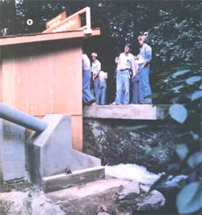
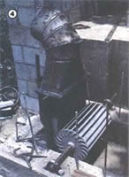
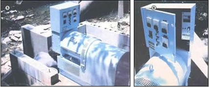
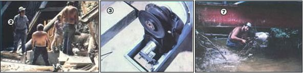

Energy independence is possible... with an automatically controlled, build-it-yourself, 110-volt AC hydropower system!
Thirty years ago, when nuclear power was little more than a scientific dream (and hadn't yet had the chance to become a nightmare), hydropower provided roughly 15% of the electricity consumed in the United States. But now - with the advent of the "atomic age" - water-generated power accounts for a mere 5% of our electricity . . . because of the idling of older plants and a lack of new construction, coupled with a dramatic rise in this country's consumption of power.
Yet today, despite its much-decreased role, hydropower is one of the least expensive (and, perhaps, most environmentally benign) sources of electricity available in the nation. In an age when the costs of fossil-fueled and nuclear-fired plants are soaring, renewable hydroelectric energy seems to be on the verge of rebirth.
You might be surprised to know, however, that the "water power awakening" is not coming in the form of huge dams and multimegawatt turbines . . . instead, it's happening on a small (and in many cases private) scale. During the 1970's, the U.S. Army Corps of Engineers identified over 20,000 existing U.S. dams potentially suitable for hydroelectric development. And the combination of ever-increasing kilowatt-hour costs, electronic improvements that allow the construction of automatic hydropower controls, and available tax credits for renewable energy is making it economically attractive for almost anyone with an adequate creek to develop his or her own power-producing site.
As it happens, MOTHER's Eco-Village had - when we acquired the property - a prime example of a dam and reservoir just begging to have a hydroelectric plant installed. So, during the summer of 1979, we began searching for equipment to build our own plant . . . a task which proved to be easier said than done!
There were, it seems, a number of factors which narrowed our potential sources. First, because the Eco-Village dam is only 15 feet high, most of the standard packages - which include high-head Pelton wheels - were out of the question. Furthermore, the nearest structure for which the water-watts could be used was already built and wired for standard AC voltage. And our decision to be independent of the utility demanded that we employ either a DC generator and inverter or an AC alternator.
The cost of each approach proved to be shocking, so we turned to a hydropower consulting firm in Los Angeles (Energy Research & Applications) for some assistance in coming up with an acceptable system . . . in terms of both capability and price. ER&A's hydrotechnical engineer, George Balalau, combined a number of established concepts to form a package which, to the best of our knowledge, is unique . . . and which, for the many people faced with problems similar to those that we encountered, could represent a bona fide home hydropower breakthrough!
One of the most expensive components in any hydroelectric plant is the sophisticated rotor that extracts power from moving water. Though the cost of casting or joining the pieces for a turbine varies with the type, the runner generally absorbs between 1/3 and 1/2 of a small installation's entire budget! To get around that "built-in" expense, Balalau combined the knowledge gained during his years of experience working with crossflow turbines in Europe with a body of information on build-it-yourself turbines assembled by the Oregon State College Engineering Department and Volunteers in Technical Assistance (VITA). The result is a Mitchell-Banki-style turbine that was built from scrap 4"-nominal mild steel pipe, 1/4" steel plate, and a 1-7/16" stainless steel shaft . . . all for under $100!
The runner itself is 12 inches in diameter and 18 inches long, has 20 blades (formed from 72° arcs of the 4" pipe), and can handle loads ranging from 1 to 10 KW. The unit's shaft rides on a pair of standard pillow-block bearings, and water is delivered through a nozzle which can be altered to accommodate a wide range of flow rates.
The turbine spins at between 400 and 500 RPM and is connected to an idler shaft by three-groove pulleys and Vbelts, which increase the RPM to 1,800. Though that rotational speed is perfectly suited to electrical generation, the AC system that we opted for requires precise RPM control . . . in order to maintain consistent power cycling. And, since changing loads and flow variations do tend to affect turbine speed, we were initially faced with compromising our power output (by spilling some of the flow or employing a clutch most of the time) in order to compensate for speed and load changes.
In response to the dilemma, Mr. Balalau teamed with Sweinhart Electric to come up with a completely new way of maintaining consistent speed in a small hydropower system. The control consists of a standard Lovejoy variable-width pulley arrangement, equipped with a speed sensor and a servomotor to automatically alter the effective diameters of the pulleys in response to speed changes. Thus when the turbine slows - causing the idler shaft to spin at less than 1,800 RPM - the lower pulley squeezes together (which increases its diameter) while the upper unit expands. In this way, the alternator shaft speed is held at 1,800 RPM (plus or minus 1%), in spite of increased or reduced loads and fluctuations in flow.
Our system's power-producing package is an off-the-shelf Kamag 14 self-exciting alternator. It is designed to deal with loads up to 10 KW on a continuous basis and provides either one 240-volt or two 120-volt, 60-cycle circuits. To allow the turbine to reach operational speed without load, the unit is set up to cut in once voltage reaches 210. And similarly, the alternator is "over-speed protected" . . . by a cutout at 270 volts.
With its net head of about 12 feet and an average flow of about 3 cubic feet per second, our hydroplant should be capable of producing as much as 2.8 KW every hour for about 350 days of each year (allowing time off for intake cleaning, bearing lubrication, etc.). As of this writing, we have not had occasion to load it with more than about 1,200 watts, but we hope to make additional tests in the near future.
The setup that we've installed at the Eco-Village could be duplicated - including all the equipment and the materials for mounting and housing the plant - for about $7,000. Since our plant should produce at least $500 worth of electricity its first year, and since - depending upon the rate of inflation - the power will be even more dollar-valuable in subsequent years, a system of this design should be able to pay off its initial investment in under ten years! After that point the water-produced electricity will be free for the using until the system is worn out (and such installations can be expected to last between 20 and 50 years with regular maintenance).
As you can well imagine, we're pretty pleased with our hydropower plant. Its design has solved a couple of nagging problems for folks who have low-head streams, and the reliability and cost of the electricity the system produces are hard to match. But perhaps the most enjoyable aspect of the installation is the thought that the electric power we're generating comes from the natural movement of water downhill. Nothing was burned - and no atoms were split - to make the power . . . we're just capturing energy that otherwise would have kept on flowing along!
EDITOR'S NOTE: You'll be happy to know that we've prepared a set of detailed plans for the construction of a crossflow turbine and nozzle to help you develop your land's water power potential. You can obtain a set of the plans by sending $15 to Mother's Plans, Hydroplant, P.O. Box A, East Flat Rock, North Carolina 28726.
|
 One of the hydroelectric plant's primary purposes is as an education tool for MOTHER's summer seminars. |
 The turbine and nozzle before concrete was cast around them. |
 (LEFT) At over 900 pounds, the powerplant wasn't easy to maneuver. (RIGHT) ""The brain"" of the plant's unique HEXact speed control system resides behind the control panel. |
|
 LEFT) Our construction crew prepares to pour the concrete for the civil works. (CENTER) A system of variable pulleys automatically controls the alternator RPM. (RIGHT) One of MOTHER's hard-working Eco-Village employees digs a cofferdam to allow the installation of ten-inch intake pipe. |
|
|